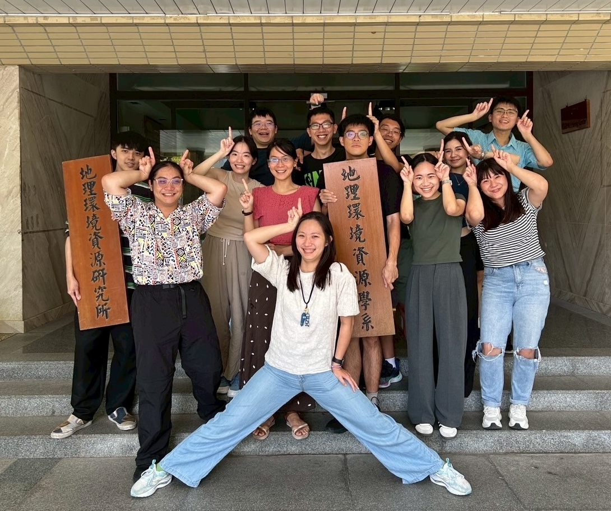
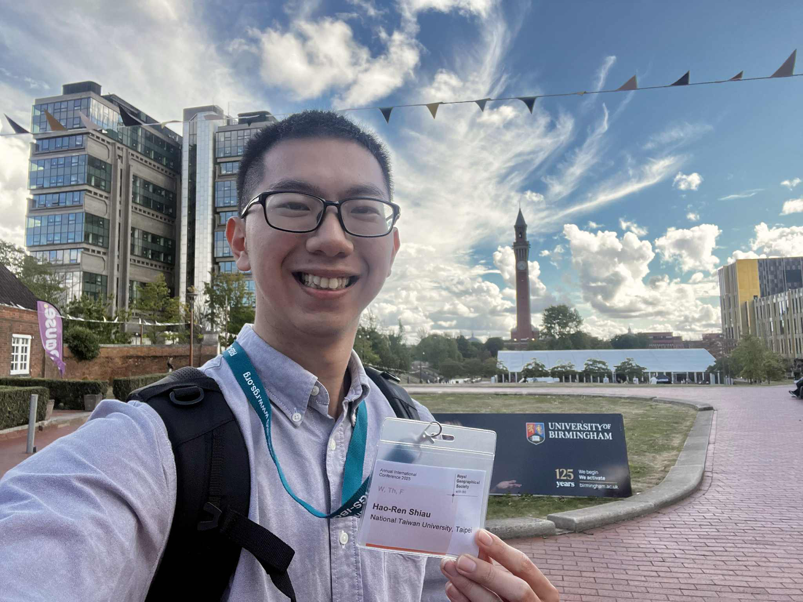
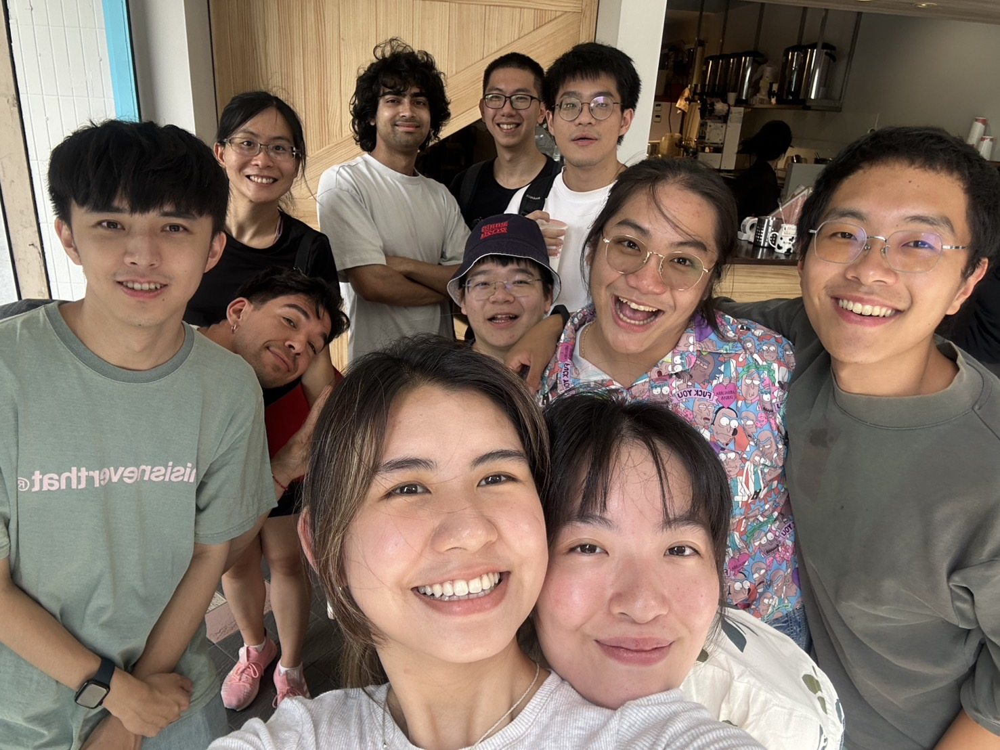
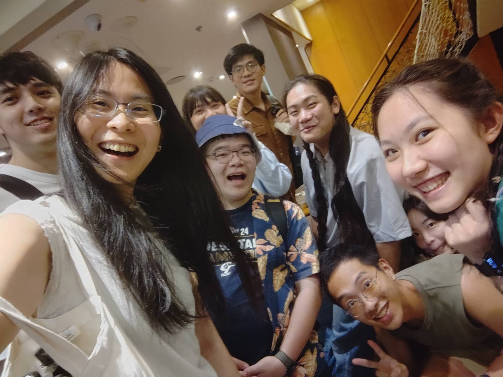
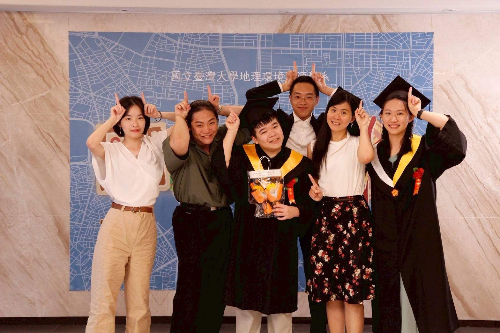
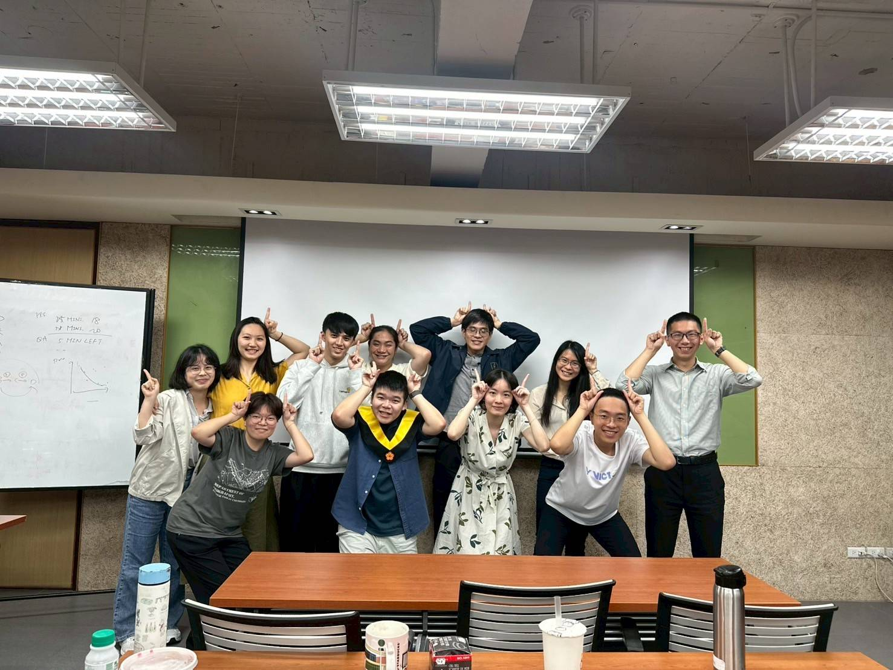
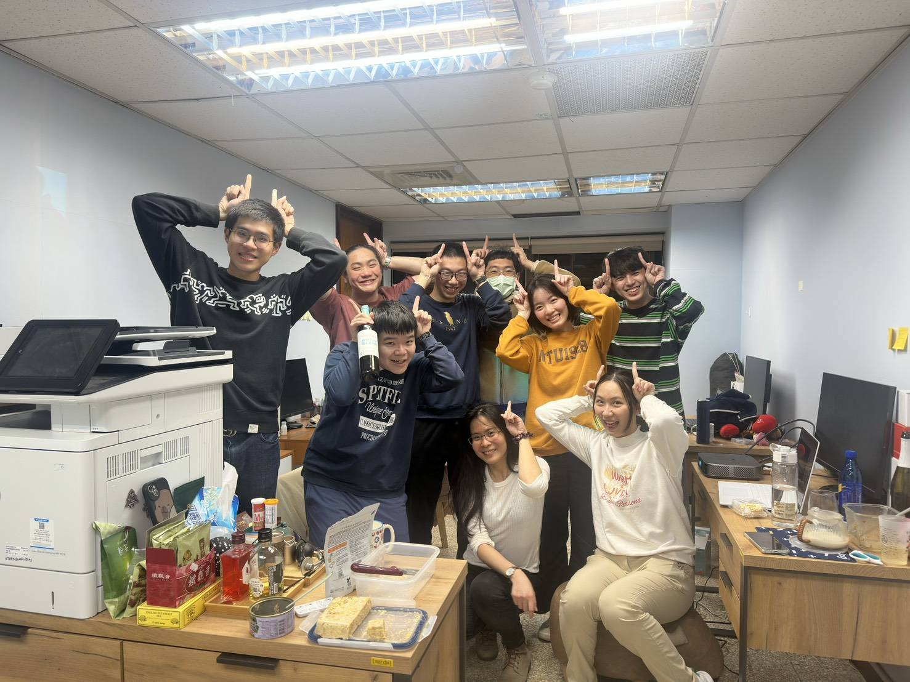
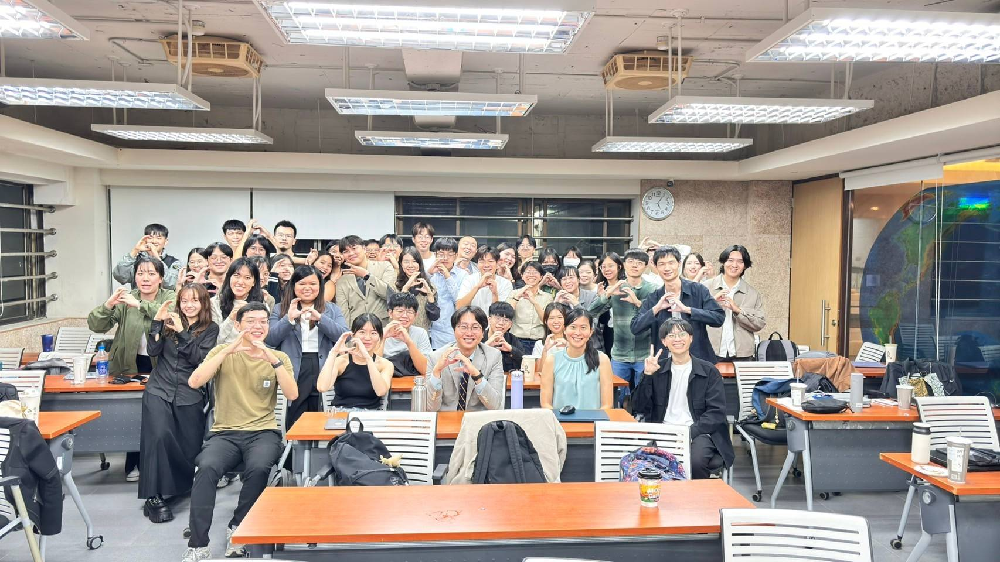
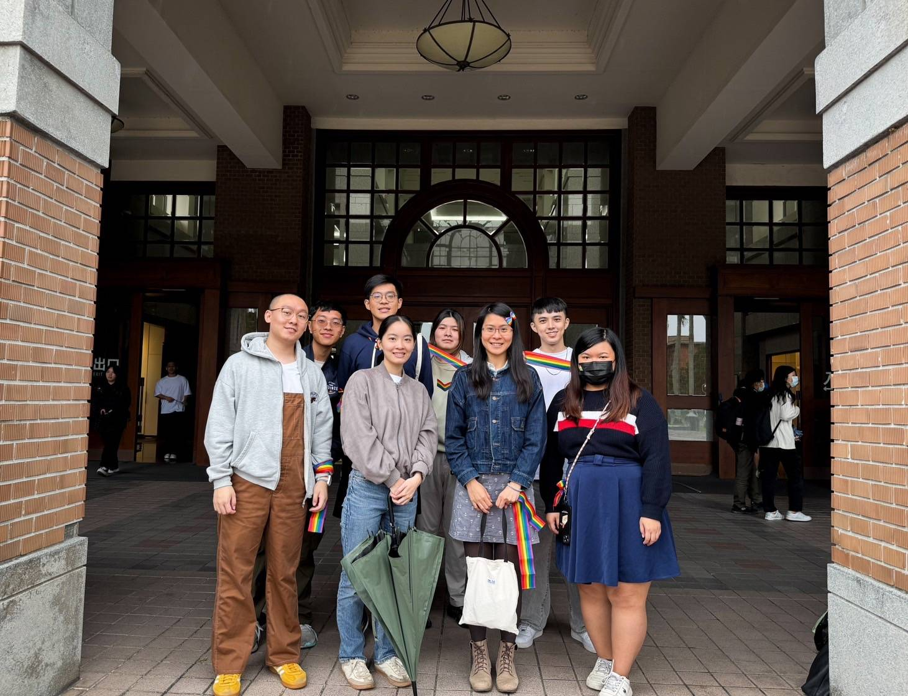
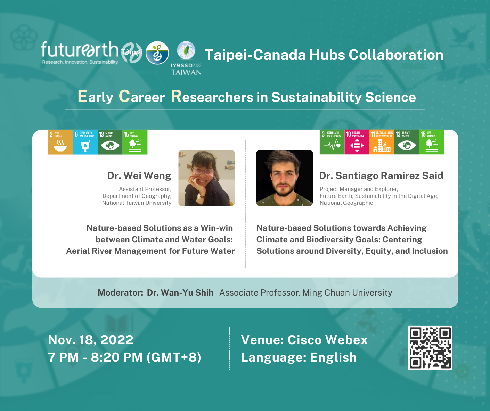

NEWS
翁葳老師獲法國雷恩第二大學國際社會人文講座
- 2025年10月
翁葳老師於2025年十月，獲法國雷恩第二大學國際社會人文講座。
慶賀研究助理傅平啟程赴日深造
- 2025年9月24日
賀！本研究室助理傅平將於2025年10月啟程前往日本東京大學攻讀碩士學位。在此，我們衷心祝福傅平在新的學術旅程中取得卓越成就。


研究助理蕭浩任赴英國皇家地理學會年會發表
- 2025年8月26日至29日
本研究室助理蕭浩任於2025年8月前往英國伯明罕，於皇家地理學會年度國際會議（RGS-IBG Annual International Conference 2025）進行口頭發表。該研究由翁葳老師指導，題目為 Not Just Numbers: Water-Based Livelihood in a Deforested Amazonian Landscape，研究透過分析家戶調查資料，探討在地以水為基礎的生活，其挑戰與永續解方。

2025 年暑期訪問學生：Zoran、Jordi
- 2025年7月至9月
歡迎 Zoran 與 Jordi 來到 SLWS 訪問！
來自美國的 Zoran 參與「熱適應與城市基礎建設」計畫；來自加泰隆尼亞的 Jordi 則投入「亞馬遜野火與公共衛生」研究，為研究室的暑期生活帶來新活力。


2025 夏聚
- 2025年6月
SLWS 不只有春酒，還有夏聚！大家一起享受美好的時光。

2025 畢業群
- 2025年5月24日
恭喜 SLWS 兩位畢業生完成學士學位，祝福他們在未來的生涯發展一帆風順！

團咪 Group Meeting！
- 2025年5月8日
團咪！大家的研究進度如何了呢？一起交流繼續前進吧！

2025 年春酒
- 2025年1月
令人期待已久的春酒，SLWS的成員開開心心齊聚508室，期許新的一年大家能夠在學業和研究更上一層樓！

2025 年 ESG 簡介與實務訓練課程
- 2024年11月2日至10日
翁葳老師再度開設「ESG 簡介與實務訓練課程」，除了簡介 ESG 的基本概念，專案更邀請業界老師蒞臨指導，學習將關鍵議題與課堂知識所學進行整合演練。感謝數十位同學的熱情參與，一起在永續的路上前行！

2024 年臺大驕傲遊行
- 2024年11月4日
SLWS 組團參加2024年臺大同志遊行「超異質++連結」，支持為更加平等的社會與校園而行！

能源工作坊
- 時間：2022年11月20日(日) 9:00-16:00
- 地點：國立台灣大學地理環境資源系館，地理一教室
- 主辦單位：台大地理系，翁葳老師研究室
- 報名：台大地理系能源工作坊報名表單
- 議程
- 上午場 9:00-12:00 (中文)
- 09:00-09:40 | 黃敬文 Renewables Consulting Group (RCG)
台灣能源轉型務實議題探討 - 09:40-10:20 | 陳米蘭 Tamkang University
Taiwan Can Help? Mapping the Politics of Net Zero - 10:20-11:00 | 黃鐘 Taiwan Power Research Institute
Introduction of decarbonization plans for electric power suppliers - 11:00-12:00 | 平台討論
- 09:00-09:40 | 黃敬文 Renewables Consulting Group (RCG)
- 午餐 12:00-13:00 現場提供餐盒
- 下午場 13:00-16:00 (English)
- 13:00-13:40 | Luís Costa Potsdam Institute for Climat Impact Research
Co-designing an integrated energy model to support the rapid appraisal of decarbonization options: Challenges and applications - 13:40-14:20 | 潘述元 Bioenvironmental Systems Engineering, NTU
The role of circular economy in carbon-neutral energy towards a carbon-negative scheme - 14:20-15:00 | 錢克瑄 Institute of Technology Management, NTHU
Translating energy transition differently: Policy-making, supply chain restructuring, and the infrastructural reconfiguration - 15:00-16:00 | 平台討論
- 13:00-13:40 | Luís Costa Potsdam Institute for Climat Impact Research
- 上午場 9:00-12:00 (中文)

訪問學者 Dr. Luís Costa 來訪
- Senior Scientist from Potsdam Institute for Climate Impact Research
- 時間：2022年11月19日-2022年12月02日
- Room：國立台灣大學地理環境資源系館 R507室
- 中研院演講：Towards a global model of human adaptation to heat stress
翁葳老師於 Future Earth 發表線上演講
- 2022年11月18日 19:00-20:30, Online
- 題目：Nature-based Solutions as a Win-win between Climate and Water Goals: Aerial River Management for Future Water
